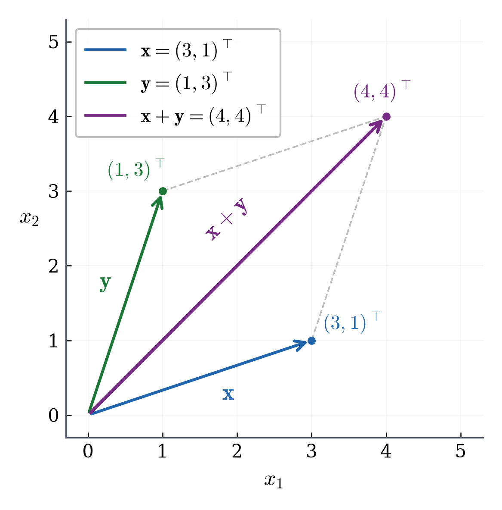
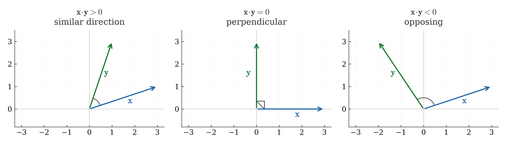
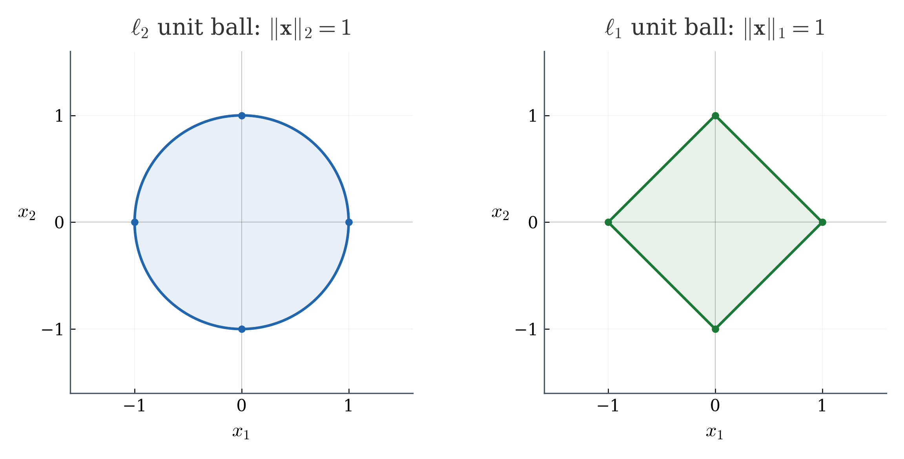
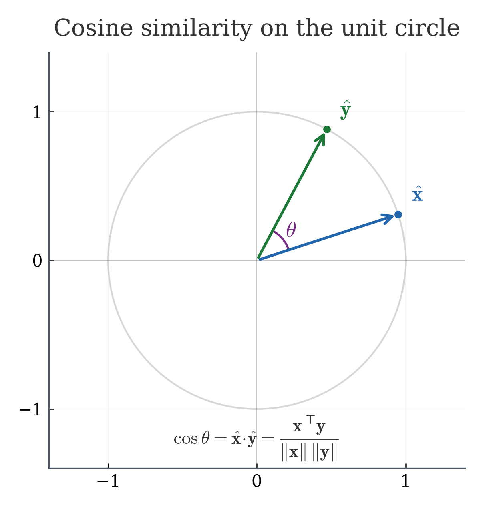
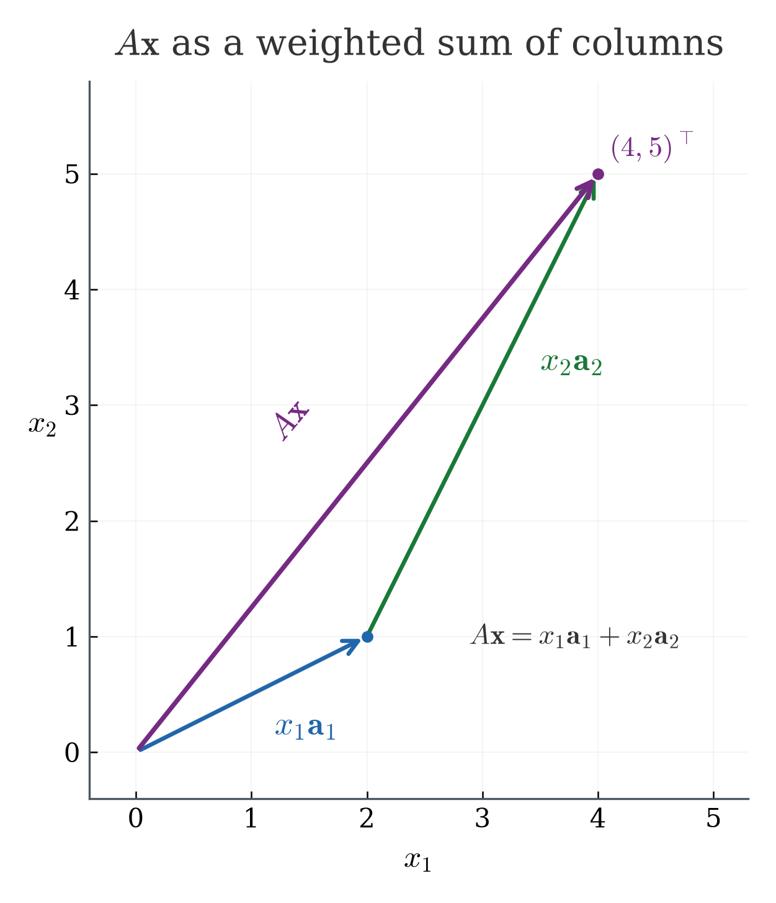
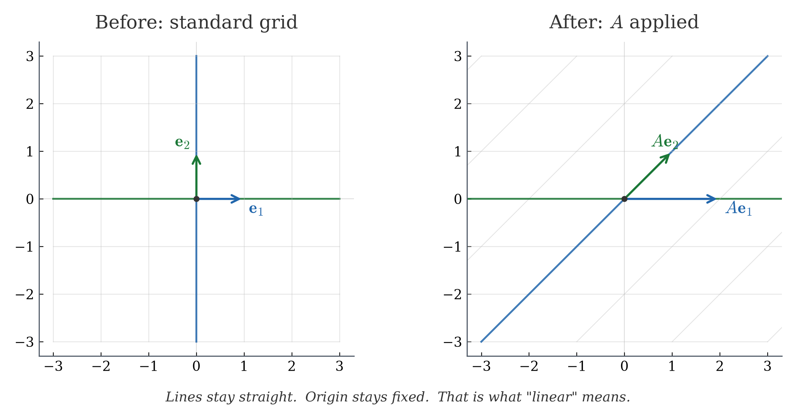

How can real objects become numbers, and how can mathematical operations compare or transform those numbers?
| Question | Math idea | Lecture |
|---|---|---|
| How do we represent an object as numbers? | vector / feature vector | L01 |
| How do we compare two objects? | norm, distance, dot product, cosine | L01 |
| How does a model transform inputs? | matrix-vector multiplication | L02 |
| How do multiple transformations combine? | matrix-matrix multiplication | L02 |
If two movies, students, or documents can be represented by numbers, how can we decide which two are similar?
This course connects mathematical ideas to data science and AI — without pretending one semester covers everything.
| Motivating question | Math we need | Coverage |
|---|---|---|
| Why can data be represented as vectors? | coordinates, features | Yes |
| Why does cosine measure similarity? | dot product, norm, angle | Yes |
| How does regression learn from data? | error, projection | Yes |
| How does attention use similarity? | dot products, weights | Partially |
| How do we build a full LLM? | deep learning, NLP, systems | Beyond |
A patient has blood pressure 120 and heart rate 75. Another has 135 and 70. How do we organize and compare these numbers?
Suppose each movie is described by three features:
\[ \mathbf{x}=(3,1,0),\qquad \mathbf{y}=(6,2,0),\qquad \mathbf{z}=(0,1,3). \]
Is \(\mathbf{x}\) more similar to \(\mathbf{y}\), or to \(\mathbf{z}\)?
A vector in \(\R^d\) is an ordered list of \(d\) real numbers: \[ \mathbf{x}=(x_1,\ldots,x_d)^\top. \]
Let \(\mathbf{x}=(2,-1)\) and \(\mathbf{y}=(-3,4)\).
All arithmetic is component by component.

Compute \(2\mathbf{x}-\mathbf{y}\) for \(\mathbf{x}=(2,-1)\) and \(\mathbf{y}=(-3,4)\).
Answer: \(2(2,-1)-(-3,4)=(4,-2)-(-3,4)=(7,-6)\).
Recall: \(\text{Movie X}=(3,1,0)\), \(\text{Movie Y}=(6,2,0)\), \(\text{Movie Z}=(0,1,3)\).
Three numbers each. How do we get a single number that says "how similar are they"?
For our movie vectors: \[ \mathbf{x}=(3,1,0),\qquad \mathbf{y}=(6,2,0), \] compute \[ \mathbf{x}^\top\mathbf{y}=3\cdot 6+1\cdot 2+0\cdot 0=20. \]
Large positive value: these two movies put weight on the same features.
\[ \mathbf{x}=(3,1,0),\qquad \mathbf{z}=(0,1,3), \] compute \[ \mathbf{x}^\top\mathbf{z}=3\cdot 0+1\cdot 1+0\cdot 3=1. \]
Much smaller: these movies have different feature patterns.
For \(\mathbf{x},\mathbf{y}\in\R^d\), \[ \mathbf{x}^\top\mathbf{y} =\sum_{i=1}^d x_i y_i = x_1 y_1 + x_2 y_2 + \cdots + x_d y_d. \]
Positive = agreement. Negative = disagreement. Zero = unrelated.

Compute \((1,2,0)^\top(3,-1,4)\). What does the sign tell you?
Answer: \(1\cdot 3+2\cdot(-1)+0\cdot 4=3-2+0=1\). Positive: mild agreement.
A model predicts scores \((2,-1)\) but the correct scores are \((0,0)\). How big is the error?
For \(\mathbf{x}=(3,4)\): \[ \norm{\mathbf{x}}_2=\sqrt{3^2+4^2}=\sqrt{9+16}=\sqrt{25}=5. \]
The \(\ell_2\) norm is the straight-line distance from the origin — like measuring with a ruler.
For \(\mathbf{u}=(-2,5)\): \[ \norm{\mathbf{u}}_1=|-2|+|5|=2+5=7. \]
The \(\ell_1\) norm adds absolute values — like walking along city blocks.
\[ \norm{\mathbf{x}}_2=\sqrt{\sum_{i=1}^d x_i^2}, \qquad \norm{\mathbf{x}}_1=\sum_{i=1}^d |x_i|. \]
The "unit ball" — all vectors with norm \(\le 1\) — looks different for each norm:
The diamond shape of the \(\ell_1\) ball is why L1 regularization pushes weights to exactly zero — the corners sit on the axes.

Compute \(\norm{(3,-4)}_2\) and \(\norm{(3,-4)}_1\).
Answer: \(\norm{(3,-4)}_2=\sqrt{9+16}=5\). \(\norm{(3,-4)}_1=3+4=7\).
Two data points are at \(\mathbf{x}=(1,2)\) and \(\mathbf{y}=(4,6)\). How far apart are they?
\[ \mathbf{x}-\mathbf{y}=(1-4,\;2-6)=(-3,-4). \] \[ d(\mathbf{x},\mathbf{y})=\norm{\mathbf{x}-\mathbf{y}}_2=\sqrt{(-3)^2+(-4)^2}=\sqrt{25}=5. \]
Distance = length of the difference vector. This is how nearest-neighbor search finds the closest match.
\[ d(\mathbf{x},\mathbf{y})=\norm{\mathbf{x}-\mathbf{y}}_2. \]
Is \(\norm{\mathbf{x}}_2 - \norm{\mathbf{y}}_2\) the same as \(\norm{\mathbf{x}-\mathbf{y}}_2\)?
If \(\mathbf{y}=2\mathbf{x}\), should these two vectors be considered similar?
Let \(\mathbf{x}=(1,2)\) and \(\mathbf{y}=(3,-1)\).
Step 1 — dot product: \[ \mathbf{x}^\top\mathbf{y}=1\cdot 3+2\cdot(-1)=3-2=1. \]
Step 2 — norms: \[ \norm{\mathbf{x}}_2=\sqrt{1+4}=\sqrt{5},\quad \norm{\mathbf{y}}_2=\sqrt{9+1}=\sqrt{10}. \]
Step 3 — divide: \[ \cos\theta=\frac{\mathbf{x}^\top\mathbf{y}}{\norm{\mathbf{x}}_2\,\norm{\mathbf{y}}_2} =\frac{1}{\sqrt{5}\cdot\sqrt{10}} =\frac{1}{\sqrt{50}} \approx 0.14. \]
Small positive value: these vectors have only mild directional agreement.
\[ \cos\theta = \frac{\mathbf{x}^\top\mathbf{y}} {\norm{\mathbf{x}}_2\,\norm{\mathbf{y}}_2}. \]
Dividing by the norms shrinks each vector to length \(1\): \[ \hat{\mathbf{x}}=\frac{\mathbf{x}}{\norm{\mathbf{x}}_2}, \qquad \hat{\mathbf{y}}=\frac{\mathbf{y}}{\norm{\mathbf{y}}_2}. \]
Then \(\cos\theta = \hat{\mathbf{x}}^\top\hat{\mathbf{y}}\) — the dot product of unit vectors measures direction only.
Cosine similarity powers search engines, recommendation systems, and text retrieval.

If \(\mathbf{y}=5\mathbf{x}\) for some nonzero \(\mathbf{x}\), what is \(\cos\theta\)?
Answer: \(\cos\theta=1\). Scaling does not change the angle.
| Tool | Input | Output | Measures |
|---|---|---|---|
| Dot product | two vectors | scalar | alignment |
| Norm | one vector | scalar | size |
| Distance | two vectors | scalar | separation |
| Cosine | two vectors | value in \([-1,1]\) | direction |
We can now compare vectors. But what transforms them?
Next time: matrices as machines that transform data.
If vectors represent data, what kind of machine can transform every data point at once?
Three students, two features each: hours studied and hours slept.
\[\begin{bmatrix} 5 & 7\\ 3 & 8\\ 6 & 6 \end{bmatrix}\]
A matrix \(A=[a_{ij}]\in\R^{m\times n}\) has \(m\) rows and \(n\) columns.
The entry in row \(i\), column \(j\) is \(a_{ij}\).
Think of \(a_{ij}\) as a spreadsheet cell address: row \(i\), column \(j\).
\[A=\begin{bmatrix}1 & 2\\-1 & 3\end{bmatrix}.\]
Transpose \(A^\top\): swap rows and columns. \((A^\top)_{ij}=a_{ji}\).
\[A=\begin{bmatrix}1&2\\3&4\end{bmatrix} \;\Longrightarrow\; A^\top=\begin{bmatrix}1&3\\2&4\end{bmatrix}\]
Identity matrix \(I\): the "do nothing" matrix. \(I\mathbf{x}=\mathbf{x}\) for any \(\mathbf{x}\).
\[I=\begin{bmatrix}1&0\\0&1\end{bmatrix}, \qquad I\begin{bmatrix}3\\7\end{bmatrix}=\begin{bmatrix}3\\7\end{bmatrix}.\]
The identity matrix is like multiplying by 1 — it shows up as the "starting point" in many AI algorithms.
If \(A\in\R^{2\times 3}\), how many entries does \(A\) have? What is the shape of \(A^\top\)?
Answer: 6 entries. \(A^\top\in\R^{3\times 2}\).
A student has features (hours studied, hours slept) = \((5,7)\). The model assigns weights \((0.6,\,0.4)\). What is the student's predicted score?
\(0.6\times 5+0.4\times 7=3.0+2.8=5.8\). That is a dot product!
\[X=\begin{bmatrix} 1 & 2\\ 2 & 1\\ 3 & 4 \end{bmatrix}, \qquad \mathbf{w}=\begin{bmatrix} 2\\ 1 \end{bmatrix}.\]
We want one score per student: \(X\mathbf{w}=\text{?}\)
\[X\mathbf{w} = \begin{bmatrix} 1\cdot 2+2\cdot 1\\ 2\cdot 2+1\cdot 1\\ 3\cdot 2+4\cdot 1 \end{bmatrix} = \begin{bmatrix} 4\\5\\10 \end{bmatrix}.\]
For \(A\in\R^{m\times n}\) and \(\mathbf{x}\in\R^n\): \[ (A\mathbf{x})_i=\sum_{j=1}^n a_{ij}x_j. \]
\[A=\begin{bmatrix}1&2\\-1&3\end{bmatrix},\quad \mathbf{x}=\begin{bmatrix}2\\-1\end{bmatrix}.\]
There is another way to read \(A\mathbf{x}\): as a weighted combination of columns.
\[2\begin{bmatrix}1\\-1\end{bmatrix} +(-1)\begin{bmatrix}2\\3\end{bmatrix} =\begin{bmatrix}2\\-2\end{bmatrix}+\begin{bmatrix}-2\\-3\end{bmatrix} =\begin{bmatrix}0\\-5\end{bmatrix}.\]
\(A\mathbf{x}\) = take the columns of \(A\), scale them by the entries of \(\mathbf{x}\), add them up. This is a linear combination.

Compute \(A\mathbf{x}\) for \(A=\begin{bmatrix}2&0\\1&3\end{bmatrix}\) and \(\mathbf{x}=\begin{bmatrix}1\\2\end{bmatrix}\).
Answer: \(A\mathbf{x}=\begin{bmatrix}2\cdot 1+0\cdot 2\\1\cdot 1+3\cdot 2\end{bmatrix}=\begin{bmatrix}2\\7\end{bmatrix}\).
If we apply \(A\mathbf{x}\) to every point in a grid, what happens to the grid?

A matrix can stretch, rotate, reflect, or shear — but always keeps lines straight.
A linear map \(\Phi\) satisfies two rules:
Every matrix \(A\) defines a linear map via \(\mathbf{x}\mapsto A\mathbf{x}\). Linear models in data science use exactly this structure.
What if we apply one transformation and then another? Can we combine them into a single matrix?
Yes: matrix-matrix multiplication = composition of transformations.
\[A=\begin{bmatrix}1&2\\-1&3\end{bmatrix},\quad B=\begin{bmatrix}0&1\\4&-2\end{bmatrix}.\]
We want \(C=AB\): first apply \(B\), then apply \(A\).
\[ c_{11}=1\cdot 0+2\cdot 4=8,\quad c_{12}=1\cdot 1+2\cdot(-2)=-3, \] \[ c_{21}=(-1)\cdot 0+3\cdot 4=12,\quad c_{22}=(-1)\cdot 1+3\cdot(-2)=-7. \]
\[AB=\begin{bmatrix}8&-3\\12&-7\end{bmatrix}.\]
For \(A\in\R^{m\times n}\) and \(B\in\R^{n\times p}\): \[ (AB)_{ik}=\sum_{j=1}^n a_{ij}b_{jk}. \]
Is \(AB=BA\)?
If \(A\) is \(2\times 3\) and \(B\) is \(3\times 4\), what is the shape of \(AB\)? Can you compute \(BA\)?
Answer: \(AB\in\R^{2\times 4}\). \(BA\) is not defined: \(B\) has 4 columns but \(A\) has 2 rows.
How does matrix-vector multiplication look in a real prediction pipeline?
Data matrix \(X\in\R^{n\times d}\), weight vector \(\mathbf{w}\in\R^d\), predictions \(X\mathbf{w}\in\R^n\).
\[X=\begin{bmatrix}1&0\\1&1\\1&2\end{bmatrix},\quad \mathbf{w}=\begin{bmatrix}2\\-1\end{bmatrix}.\]
Before computing, always check: do the inner dimensions match?
\[ \underbrace{X}_{n\times d}\;\underbrace{\mathbf{w}}_{d\times 1} =\underbrace{X\mathbf{w}}_{n\times 1}. \]
If the inner \(d\)'s do not match, the multiplication is not defined.
If \(X\in\R^{5\times 3}\) and \(\mathbf{w}\in\R^{3}\), what is the shape of \(X\mathbf{w}\)? How many predictions?
Answer: \(X\mathbf{w}\in\R^5\). Five predictions, one per sample.
We now have the building blocks: vectors for data, dot products for comparison, matrices for transformation.
Next unit: what if the model cannot fit all data exactly? We will need projection, residuals, and least squares.
These tools will appear again and again throughout the course:
What if the model cannot fit all data exactly?
Unit 2: projection, residuals, and least squares — the geometry of best approximation.